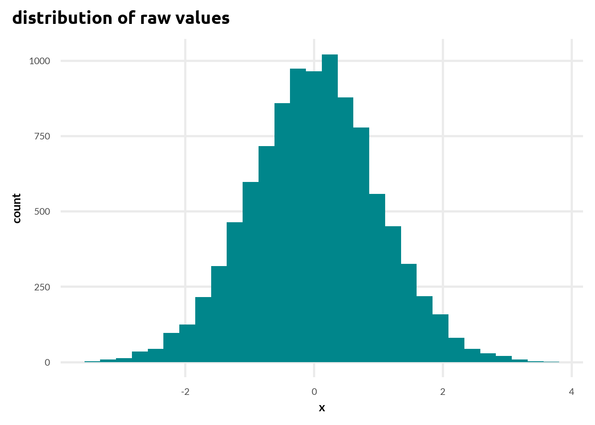
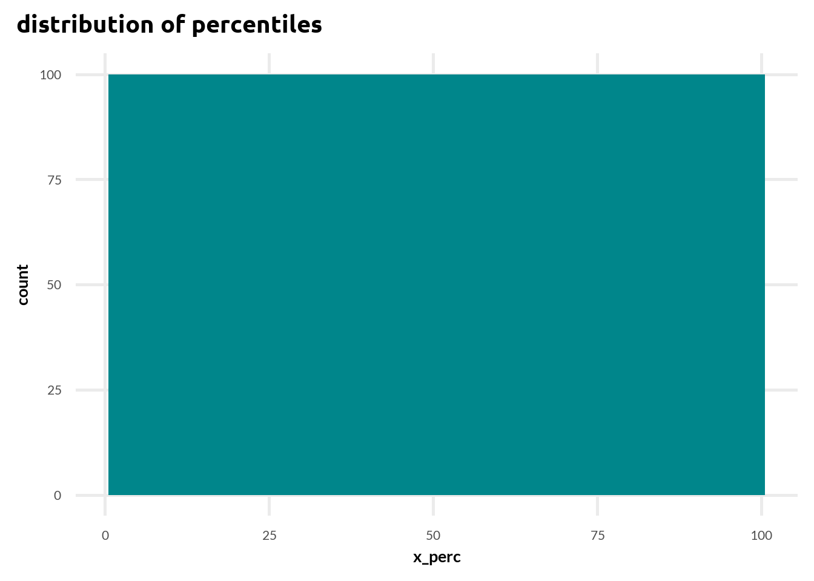
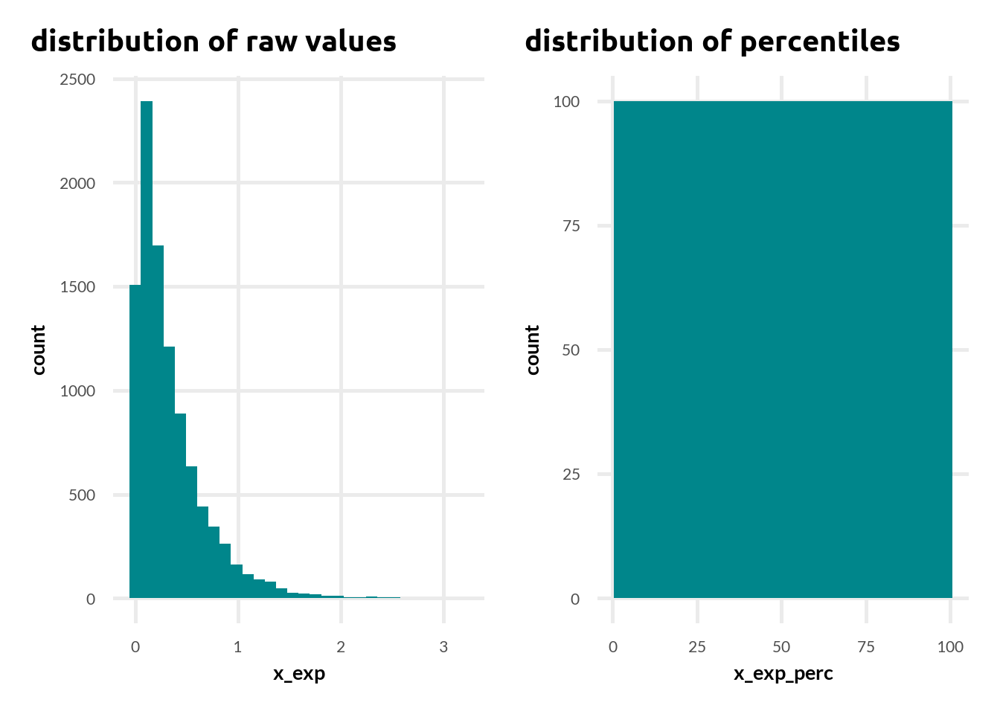
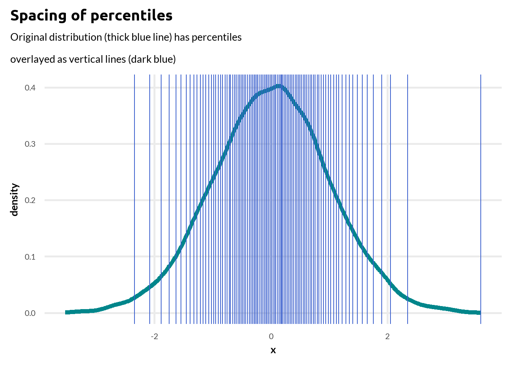
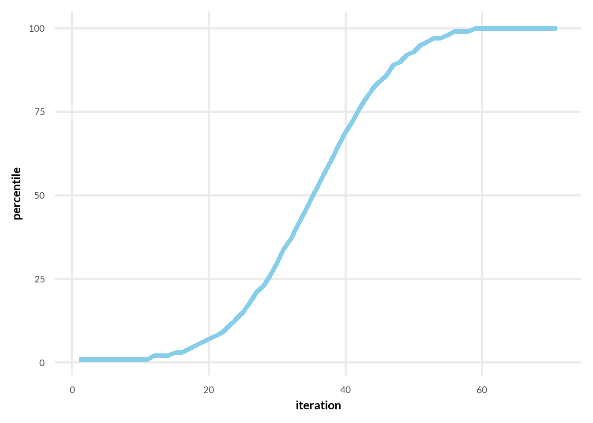
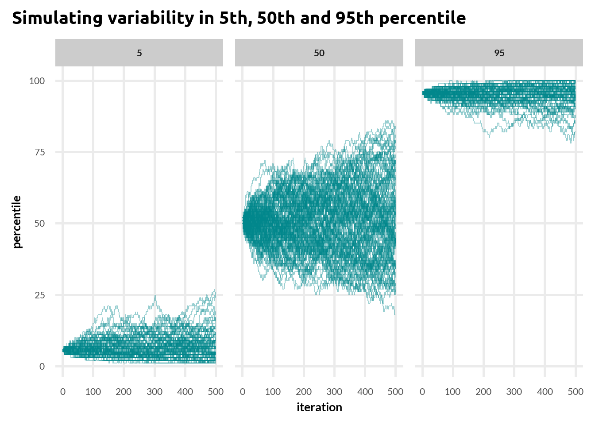
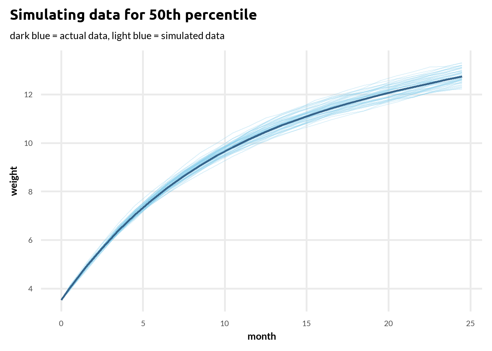
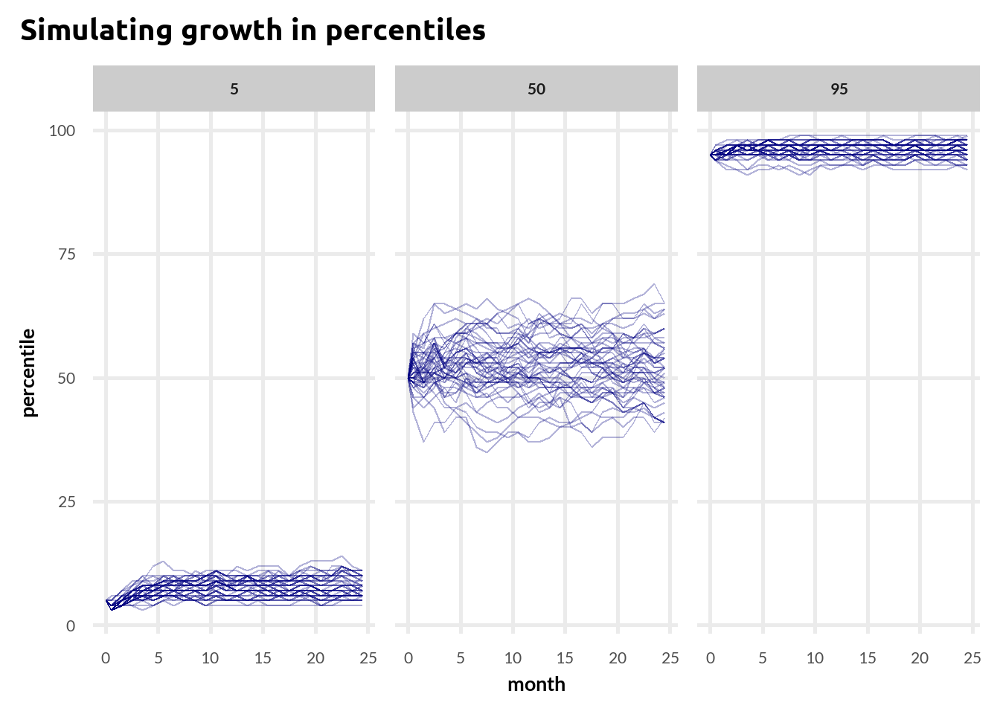
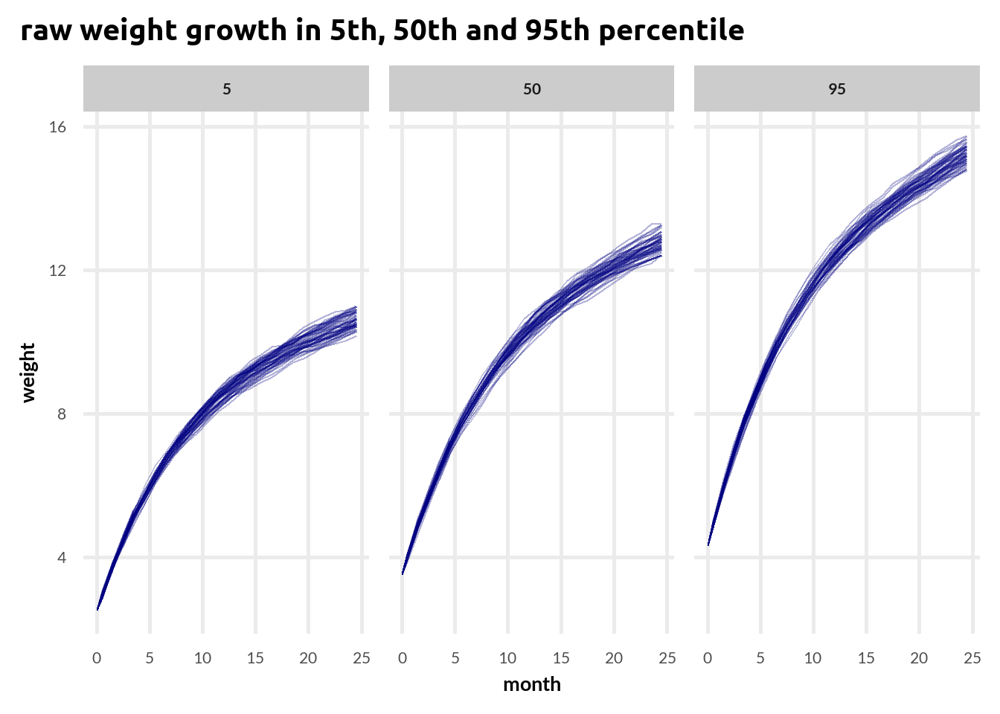

So this post was born out of annoyance with dealing with percentile grids for baby weights and how easily they are misunderstood. What I want to show are some more or less unintuitive features of percentiles scales especially having to do with how the distribution for percentiles looks like and how spacing between percentiles affects potential variability (e.g. in change) depending on where we are on the percentile scale.
Below is the setup chunk with some functions for plots and loaded packages
First lets generate some data from a normal distribution and set the random seed.
#' lets start with some simulationset.seed(44)N <-1e4x <-rnorm(N)x_perc <-ntile(x, 100)
looking at marginal distributions
Lets start by looking at simple distributions. This one should be fairly obvious but I feel like it still gets forgotten way to often. How does a distribution of percentiles look like? Lets start with raw x and how it looks like:
raw normal histogram
ggplot(data.frame(x), aes(x =x )) +geom_histogram(fill = col_main[13]) +labs(title ="distribution of raw values") +my_theme()

Nice and friendly normal distribution. So how does a percentile distribution look like?
percentile normal histogram
ggplot(data.frame(x_perc), aes(x =x_perc )) +geom_histogram(bins =100, fill = col_main[13]) +labs(title ="distribution of percentiles") +my_theme()

It’s perfectly flat! Percentiles will always look like this because, well… by definition they are percentages so the same number of observations into each percentile. We can change the original distribution but it won’t affect the percentile much. We can see it e.g. with exponential distribution:
Exponential histograms
x_exp <-rexp(N, 3)x_exp_perc <-ntile(x_exp, 100)exp_raw <-ggplot(data.frame(x_exp), aes(x =x_exp)) +geom_histogram(fill = col_main[13]) +labs(title ="distribution of raw values") +my_theme()exp_perc <-ggplot(data.frame(x_exp_perc), aes(x =x_exp_perc)) +geom_histogram(bins =100, fill = col_main[13]) +labs(title ="distribution of percentiles") +my_theme()exp_raw + exp_perc

This can get annoying sometimes e.g. when doctors act as if no one should be on the lowest percentiles (me and many of my friends have heard that plenty of times). Well, someone has to be on the lowest percentiles, that’s how percentiles work! And just as many people will be in the 1st percentile as there will be in the 50th percentile. This can be understandable from the perspective of individuals (no one wants to be the one having to deal with e.g. with kids with weight from the 1st percentile) but makes no sense once you look from a broader perspective.
Spacing between percentiles
One thing that is often forgotten about the percentile scales is that there can be different spacings between various percentiles. Lets calculate the values for percentiles and then get differences between subsequent percentiles to look at this:
You can see that the differences are quite large for the first few and last few percentiles and are pretty small for the rest. This is exactly what we would expect with a gaussian distribution of raw values.
Lets try to overlay the percentiles on the gaussian distribution we drew our data from
percentile spacing
as.data.frame(x) |>ggplot(aes(x)) +geom_density(color = col_main[13], linewidth =2) +geom_vline(data = x_df, aes(xintercept = x_percentiles), color = col_main[15]) +labs(title ="Spacing of percentiles", subtitle ="Original distribution (thick blue line) has percentiles\noverlayed as vertical lines (dark blue)") +my_theme()

You can see how much of the distribution falls into 1st, 2nd or 99th percentile and how little falls into a single percentile in the middle of the distribution. It’s actually fairly intuitive why this happens. The same number of people have to fall into each percentile and if there are few people at the tails of the distribution then we need to widen the range of the percentiles there to get enough people. The opposite is true for the peak of the distribution. There are a lot of people there so a slim sliver of the distribution is enough to get quite a few people into the percentile. Note that the 100th percentile is so far away because the quantile function records the higher boundary of the percentile rather than the middle so it has to end at the very far end of the distribution.
One very important consequence of this is that percentiles are pretty much ranks (see here for an good old text on the matter) and should be treated more as ordinal than interval scales which can be a bit unintuitive at first (see here for the perils of forgetting about that).
This also means that if some value increases over time from a very low percentile with a steady pace then we might expect first slow increases in percentiles, then rapid increases around the middle of the distribution and again slower increases as we are reaching the top. Lets try simulating that:
1st simulation
x_init <-min(x) #start with the lowest value in our distributionperc_progress <-c() #create a vector to store percentilesfor(i in1:1000) { # max of 1000 steps x_init <- x_init + .1#increase our value by .1 perc_value <-min(x_percentiles[which(x_percentiles > x_init)]) # get the percentile value percentile <-names(x_percentiles[which(x_percentiles == perc_value)]) # get the percentile name perc_progress <-c(perc_progress, percentile) # we want to stop if we get too close to max value and there are still iterations left (otherwise the min() function breaks)if (x_init >=(max(x) - .1)) {break }}perc_progress<-as.numeric(str_extract(perc_progress, "[0-9]+"))data.frame(perc_progress) %>%ggplot(aes(x =1:length(perc_progress), y = perc_progress)) +geom_line(color = col_main[12], linewidth =2) +labs(x ="iteration", y ="percentile") +my_theme()

Exactly what we would expect! First the change in percentiles is slow, then it speeds up and slows down in the right half of the plot. It takes us a long time to get out of the lowest percentiles but once we do we quickly get to the 50th and start changing more slowly form there on.
variability in percentiles
One significant consequence of how differences between subsequent percentiles vary is how much variability in percentiles can we expect with the same amount of variability on the original scale depending on where we start.
This is a common thing when infants gain weight. They might be gaining weight by some amount plus some random variations (lots of reasons here - some things in the diet, baby pooped/peed before being weighed etc.). In low or high percentiles we might expect this random variation in how much they gain weight to matter little. However in the middle it will make the variation in percentiles seem bigger. Again lets simulate some random variation around our distribution of x with 3 starting places: low (5th), middle (50th) and high percentile (95th). We will run 100 simulations for each starting place and each simulation has 500 iterations.
2nd simulation
simulate_variability <-function(init_perc, sd_change, n_iter =500) { x_init <- x_percentiles[init_perc] #start with the lowest value in our distributionperc_progress <-c() #create a vector to store percentilesfor(i in1:n_iter) { # max of 1000 steps x_init <- x_init +rnorm(1, mean =0, sd = sd_change) #increase our value by .1 perc_value <-min(x_percentiles[which(x_percentiles > x_init)]) # get the percentile value percentile <-names(x_percentiles[which(x_percentiles == perc_value)]) # get the percentile name perc_progress <-c(perc_progress, percentile) # we want to stop if we get too close to max value and there are still iterations left (otherwise the min() function breaks)if (x_init >=(max(x) - .1) | x_init <= (min(x) + .1)) {break }} perc_progress<-as.numeric(str_extract(perc_progress, "[0-9]+"))return(perc_progress)}simulate_growth <-function(perc, n_iter =500, n_runs =100) { df <-data.frame()for(i in1:n_runs) { prog<-simulate_variability(perc, .02, n_iter) df <-rbind(df, prog) }colnames(df) <-1:n_iter df$run <-1:n_runs df_long <- df %>%pivot_longer(-c(run), names_to ="iter", values_to ="percentile") %>%mutate(condition =as.character(perc),iter =as.numeric(iter))}df_l <-simulate_growth(5)df_m <-simulate_growth(50)df_h <-simulate_growth(95)df_joined <-bind_rows(df_l, df_m, df_h)df_joined %>%ggplot(aes(x =as.numeric(iter), y = percentile, group =as.factor(run))) +geom_line(alpha = .4, color = col_main[13]) +facet_wrap(~condition) +labs(title ="Simulating variability in 5th, 50th and 95th percentile",x ="iteration") +my_theme()

You can see a lot more variability in the middle panel than in the left or right ones even though the changes on the original scale come from the same distribution. We can also get the average range (difference between highest and lowest percentile on a given run):
In the above simulation we were in fact not creating any growth, just random variation from the original value (in order to simulate that we would need percentiles for each iteration) but assuming no strange growths that would not change the results a lot (rather than drawing a number from a distribution with mean 0 we would make the mean higher than 0 and still our expectation would be that a person in 50th percentile in time 1 should be on average in 50th percentile in time 2).
This means that when looking at percentiles e.g. weight gains of babies in low or high percentiles might seem much more stable than of those from the mid percentiles even if in fact they are very similar weight gains.
Simulating from real data
Some data on percentiles of baby weights are actually available online. This means we could check our simulation above with some real data that we can use as a basis for simulating growth. What we will do is:
get the data that stores a number of percentiles of baby weight at months 0 to 24.
get approximations of growth at various percentiles (5th, 50th and 95th)
Get full percentile tables for each timepoint
Simulate growth at those percentiles to see variability
Below is a plot of percentiles for male baby weights from birth to 24 months taken from CDC:
Lets try to simulate that. We won’t go to any modelling really but rather use approxfun() to get an approximation of the growth function at a given percentile. Below is the code to get approximation for the 50th percentile. We will do the same at 5th and 95th
approximating growth
#growth function at 50th#get months and weights at 5th, 50th and 95th percentilex <- baby_w$monthsweight_50 <- baby_w$`50th`weight_5 <- baby_w$`5th`weight_95 <- baby_w$`95th`#make the approximation functionfun_5 <-approxfun(x = x, y = weight_5)fun_50 <-approxfun(x = x, y = weight_50)fun_95 <-approxfun(x = x, y = weight_95)
We can run a simple simulation to get some idea if they work ok. We will simulate growth based on our function plus a little random noise. We’ll check the 50th percentile function for brevity:
50th percentile check
df_50 <-data.frame()for (i in1:50) { x_1 <-fun_50(0) x_1_results <-c(x_1)for (i in (1:25)) { x_1 <- x_1 +fun_50(x[i+1]) -fun_50(x[i]) +rnorm(1, 0, .05) x_1_results <-c(x_1_results, x_1) } df_50 <-rbind(df_50, x_1_results)}colnames(df_50) <- xdf_50 %>%mutate(run =1:50) %>%pivot_longer(-c(run), names_to ="month", values_to ="weight") %>%mutate(month =as.numeric(month)) %>%ggplot(aes(x = month, y = weight, group = run)) +geom_line(alpha = .3, color = col_main[12]) +geom_line(data = baby_w, aes(x = months, y =`50th`), color = col_main[14], linewidth =1, inherit.aes =FALSE) +labs(title ="Simulating data for 50th percentile",subtitle ="dark blue = actual data, light blue = simulated data") +my_theme()

Looks pretty good! Now we will need full percentile tables since the cdc data provides only a handful of percentiles. I did that using an approximation for normal distributions.
full percentile grid
get_mean_sd <-function(perc_50, perc_75) { m <- perc_50 sd <- (perc_75 - perc_50) /0.6744898 result <-c(m, sd)return(result)}get_percentiles <-function(time) { perc_50 <-as.vector(baby_w[time,6]) perc_75 <-as.vector(baby_w[time,7]) msd_01 <-as.vector(get_mean_sd(perc_50[[1]], perc_75[[1]]))s <-rnorm(1e4, msd_01[1], msd_01[2])percentiles <-quantile(s, seq(.01,1, .01))return(percentiles)}percentiles_df <-data.frame(a =1:100)for(i in1:26) { p <-get_percentiles(i) percentiles_df[,i] <- p}cnames <-paste0("p_", 1:26)colnames(percentiles_df) <- cnamespercentiles_df$percentile <-1:100#the dataframe above has percentiles for each .5 month separately
Now we can simulate baby growth and check against the percentile tables to see if for middle percentiles growth we will see more variability in percentiles. We will also store the raw weights so that we can look at it as well.
cdc simulation
#simulating the growthsimulate_from_cdc <-function(fun, n_iter =50, variability = .05) { f <-get(fun) df_perc <-data.frame() df_raw <-data.frame() perc_origin <-as.numeric(str_extract(fun, "[0-9]+"))for (i in1:n_iter) { init <-f(x[1]) raw <-c(init) results <-c(perc_origin) #need to extract the percentile from the function name the percentile for(i in1:25) { init <- init +f(x[i+1]) -f(x[i]) +rnorm(1, 0, variability) perc_value <-min(percentiles_df[which(percentiles_df[,i+1] > init), i+1]) # get the percentile value perc <- percentiles_df[which(percentiles_df[,i +1 ] == perc_value), "percentile"] # get the percentile name results <-c(results, perc) raw <-c(raw, init) } df_perc <-rbind(df_perc, results) df_raw <-rbind(df_raw, raw) }colnames(df_perc) <- x df_perc$run <-1:n_iter df_perc_long <- df_perc %>%pivot_longer(-c(run), names_to ="month", values_to ="percentile") %>%mutate(month =as.numeric(month),condition = perc_origin) colnames(df_raw) <- x df_raw$run <-1:n_iter df_raw_long <- df_raw %>%pivot_longer(-c(run), names_to ="month", values_to ="weight") %>%mutate(month =as.numeric(month),condition = perc_origin) df_perc_long$weight <- df_raw_long$weightreturn(df_perc_long)}df_cdc_l <-simulate_from_cdc("fun_5")df_cdc_m <-simulate_from_cdc("fun_50")df_cdc_h <-simulate_from_cdc("fun_95")df_cdc_joined <-bind_rows(df_cdc_l, df_cdc_m, df_cdc_h)df_cdc_joined %>%ggplot(aes(x = month, y = percentile, group = run)) +geom_line(alpha = .3, color = col_main[16]) +facet_wrap(~condition) +labs(title ="Simulating growth in percentiles") +my_theme()

We got very similar results to our earlier simulation! Middle panel show much larger variability in percentiles compared to the left and right ones. We can also get the average range in percentiles.
We could compare this against actual growth in weight to see if there is more variability in 50th percentile (there should not be much):
comparing raw growth
df_cdc_joined %>%ggplot(aes(x = month, y = weight, group = run)) +geom_line(alpha = .3, color = col_main[16]) +facet_wrap(~condition) +labs(title ="raw weight growth in 5th, 50th and 95th percentile") +my_theme()

It does not seem like there is more variability in growth in the middle category when we look at .
some caveats and what is the point
All of the above of course depends not just on the data that we got from cdc but also on our assumed model of growth which is probably pretty simplistic. Can we assume constant random variability across percentiles and in time? I think the first one is easier but I don’t think it would undermine the point a lot if variability in time changed as long as it was the same across all percentiles.
A more important point that is the drive home message is that you can’t forget about the original distribution of raw values when working with percentiles. If in the simulations above we were working with a different distribution then the variability in percentiles would look different. For example for a bimodal distribution we would see the exact opposite from what happens with a normal distribution - the greater variability would be at lowest and highest percentiles.
Maybe if I have the time and some data I will try to make some longitudinal ordinal models (like a Markov model or some multilevel ordinal maybe) to expand on this (something like described by Frank Harrell here).